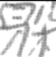

为了使模型具有更强的鲁棒性，一种常用的方法就是增强训练模型时的数据集，让模型学习更加鲁棒，虽然这听起来十分暴力，但是不失为一种很有效的办法。
你的测试集就是我的训练集（
就以目前在做的project为例介绍一下一些增强数据集的小办法
图像缩放
以汉字识别为例，原始的图片可能是这样子的

我们需要让这个汉字看起来小一点，像是这样

也可能需要这个汉字看起来大一点，像是这样

我们仍然采用浅谈pytorch加载图片作为训练数据的一种姿势中对读入图片做预处理的方式，来自己写一个class来随机缩放图片。
基本的思路就是，确定一个缩放比例的上下界，在这个上下界之间随机一个大小，如果要缩小就把图片缩小周围补上空白，如果放大就先把图片放大，然后从中间截取出需要的大小。
废话少说直接上代码
from torchvision import transforms
class picPull():
def __init__(self, output_size):
self.os = output_size
self.lower_bound = lower_bound
self.upper_bound = upper_bound
def __call__(self, img):
choice = random.uniform(self.upper_bound, self.upper_bound)
img = MyResize(int(self.os[0]*choice), int(self.os[1]*choice)).__call__(img)
if choice < 1:
ret = Image.new('L', (self.os[0], self.os[1]), 255)
ret.paste(img, (int((self.os[0]-self.os[0]*choice)/2),int((self.os[1]-self.os[1]*choice)/2)))
return ret
else:
ret = transforms.CenterCrop(self.os).__call__(img)
return ret
其中可能有两个奇怪的东西，第一个是MyResize，见浅谈pytorch加载图片作为训练数据的一种姿势，第二个是transforms.CenterCrop，这是torchvision中自带的中心截取，更多的方法见Pytorch：transforms的二十二个方法
图片随机旋转
幸运的是，torchvision自带了给图片随机旋转的方法，transforms.RandomRotation(degrees, fill=)，这里要注意，如果不写fill的话，在灰度图的模式下默认填补为黑色，像这样

如果想补位白色就把fill参数调整为255，效果像这样

图片翻转
包括了图像左右翻转，上下翻转
和随机旋转一样，torchvision也自带了一些方法
transforms.RandomHorizontalFlip 和 transforms.RandomVerticalFlip
太困了，不写了（
更新了更新了 现在是2020.9.20 还把之前的一个小错误给改了
然后加了个完成的方便以后用？
from PIL import Image
import data
import numpy as np
import matplotlib.pyplot as plt
import random
from torchvision import transforms
class MyResize(object):
def __init__(self, width, height):
self.width = width
self.height = height
def __call__(self, img):
raw_width, raw_height = img.size
ratio = min(self.height/raw_height, self.width/raw_width)
twidth, theight = (min(int(ratio * raw_width), self.width - 15), min(int(ratio * raw_height), self.height - 15))
img = img.resize((twidth, theight), Image.ANTIALIAS)
# 拼接图片，补足边框 居中
ret = Image.new('L',(self.width, self.height), 255)
ret.paste(img, (int((self.width-twidth)/2),int((self.height-theight)/2)))
return ret
from torchvision import transforms
class picPull():
def __init__(self, output_size, lower_bound, upper_bound):
self.os = output_size
self.lower_bound = lower_bound
self.upper_bound = upper_bound
def __call__(self, img):
choice = random.uniform(self.lower_bound, self.upper_bound)
img = MyResize(int(self.os[0]*choice), int(self.os[1]*choice)).__call__(img)
if choice < 1:
ret = Image.new('L', (self.os[0], self.os[1]), 255)
ret.paste(img, (int((self.os[0]-self.os[0]*choice)/2),int((self.os[1]-self.os[1]*choice)/2)))
return ret
else:
ret = transforms.CenterCrop(self.os).__call__(img)
return ret
tf = transforms.Compose([
MyResize(64, 64),
picPull((64, 64), 0.5, 1.5),transforms.RandomRotation(180, fill=255),
transforms.RandomHorizontalFlip(0.5),
transforms.RandomVerticalFlip(0.5),
transforms.RandomResizedCrop((64,64), scale=(0.6, 1.4), ratio=(0.75,1.25)),
transforms.ToTensor()
])